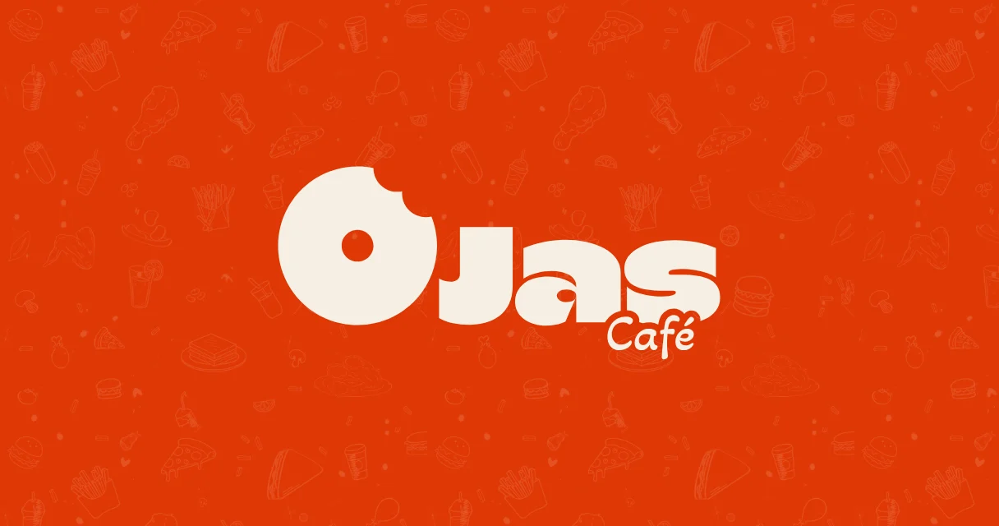
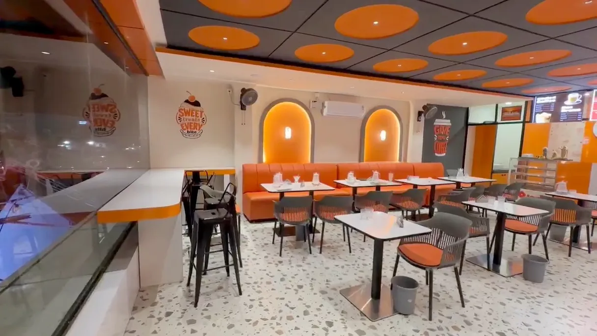
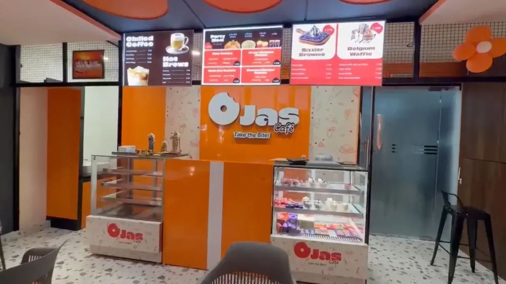
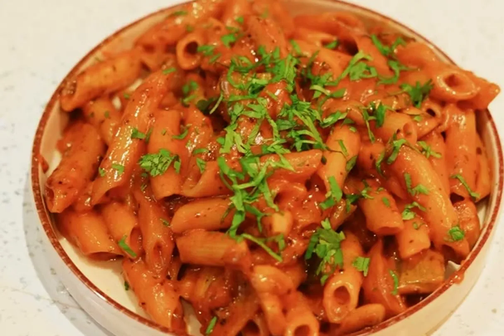

Palani, Tamil Nadu · Digital growth partner
Most cafés don’t fail on opening day. They fail on day forty — when the launch crowd has gone home and nobody has a reason to come back. Ojas Café was built, from the first day of fit-out, around that second date.

Palani is a temple town in the Dindigul district of Tamil Nadu. Pilgrims arrive all year. Students fill the streets every afternoon. The footfall is the kind most tier-3 towns would envy.
What it didn’t have was a single place to sit that felt like the places people were watching on their phones every night.
The owner came from a pharmacy background. This was their first venture into food and beverage — no inherited bad habits, but no playbook either.
On paper, the opportunity looked obvious. In our experience, that’s exactly when you should start worrying.
By the time most growth partners get the call, the expensive mistakes have already been made. The billing system can’t export clean data. The brand can’t stretch past one signboard. The prices are anchored too low to ever move.
The first quarter becomes damage control.
We joined Ojas during fit-out. Equipment, layout, pricing, systems and brand were decided together, in the same room, before any of them could be decided badly.
That timing is the entire engagement. It’s the difference between advising a business and helping build one.
Here was the real problem: a metro-standard experience, sold into a tier-3 wallet.
Price high, and the student crowd visits once, takes a photo, and never forms a habit. Price low, and “accessible premium” quietly becomes just another snack stop. Either way, the market makes up its mind in a few weeks — and it rarely changes it.
The obvious answer was discounting. We didn’t touch it.
Instead, we solved it with menu composition. We stocked the categories this audience had seen online for years but couldn’t buy anywhere within reach — and priced them for the town, not the city.
Novelty carries the premium. Price carries the habit. A discount would have bought one busy weekend and repriced the brand in every customer’s head, permanently.

There was a second problem hiding in the floor plan.
The building holds two operations. Popular Bakes runs the ground floor as a fast counter-and-takeaway business. Ojas Café sits upstairs as a sit-down experience. Different margins, different service, different expectations — all inside roughly 700 square feet.
Customers don’t read that split on their own. Leave it alone and the two blur together, and the weaker impression wins.
So we stopped treating them as competitors and started describing them as two sides of the same visit — in every reply, every listing, every sign. Not once. Continuously.
If someone standing inside your venue can’t tell what it is, no signboard is going to fix that later.
Name, mark, palette, typography, tagline. All of it from zero.
The mark is a simple circle with a bite taken from its upper-right edge. The tagline — Ojas. Take the Bite. — puts the name inside the line, echoes the mark, and works as a closer or a whisper depending on where it lands.
We use it sparingly, on purpose. A line that appears everywhere eventually means nothing.
Then came the constraint that shaped everything: neither of the brand’s two typefaces has a bold weight.
The single most common way designers create hierarchy simply wasn’t available. Faking it would have visibly damaged both fonts across print, signage and screen.
So every piece of material builds emphasis from size, colour and spacing alone. It was harder. It also produced a far more disciplined system than freedom ever would have.

Every software decision came down to one unglamorous question: will this still work after the best employee quits?
None of these choices are exciting. Every one of them is expensive to get wrong.
Most loyalty programmes are set up in an afternoon and slowly become a permanent discount. We designed this one line by line.
Points follow spend, not visits. A quick counter purchase and a full table upstairs aren’t the same event, and rewarding them equally rewards the cheaper habit.
Points expire at ninety days. Long enough for a student who visits weekly. Short enough to create a reason to come back.
Redemption bills earn nothing. Without that one rule, rewards fund more rewards, and the programme eats itself.
Here’s the move we’re proudest of, and it cost almost nothing.
Weeks before opening, branded cards carrying loyalty QR codes went out through the owner’s pharmacy — to customers who had no idea a café was coming.
Most venues open their doors and start building a customer list from zero, at the exact moment they have no attention to spare. Ojas opened with one.
The grand opening on 23 August 2026 had a minister as chief guest, and the launch offer filled the room. Since then, the content we’ve produced has crossed 544,000 views.

We read the billing exports every few weeks. Not the summary screen — the raw rows.
And one pattern jumped out. Counter and takeaway orders were capturing almost no customer contact details. Upstairs, wherever a captain owned the table, capture was strong.
The easy diagnosis was bad data. The easy fix was to make the phone field mandatory.
That fix would have failed. Under queue pressure, staff skip fields — or fill them with placeholder numbers that make the dashboard look healthier while quietly poisoning the database.
The two floors gave us something rare: a clean comparison. Same brand, same week, same system. The only difference was whether a person owned the interaction.
The answer was staffing and process, not software. And you only see it if you stop reading the dashboard and start reading the data.
1. Local defaults are not optional. Every regional market has something its customers expect without thinking. Build only on imported trends and skip it, and you don’t look aspirational — you look like you aren’t for them. We learned this one in public, and fixing it is now a promise we’ve made out loud.
2. Price for delivery apps before you list, not after. Lowering a price later is easy. Raising one puts you in a queue. And anything that doesn’t survive the ride shouldn’t be listed at all — it only earns bad reviews on a platform you don’t control.
3. Dirty data is usually an operations problem in disguise. Fake numbers are the symptom. A rushed counter is the cause.
Both floors have been open since 23 August 2026. The listing is live, the loyalty programme is running, the birthday offer is active, and delivery onboarding continues.
Most case studies end with a launch. This one doesn’t, because the work never did.
Opening day was the easy part. Day forty is where it gets interesting.